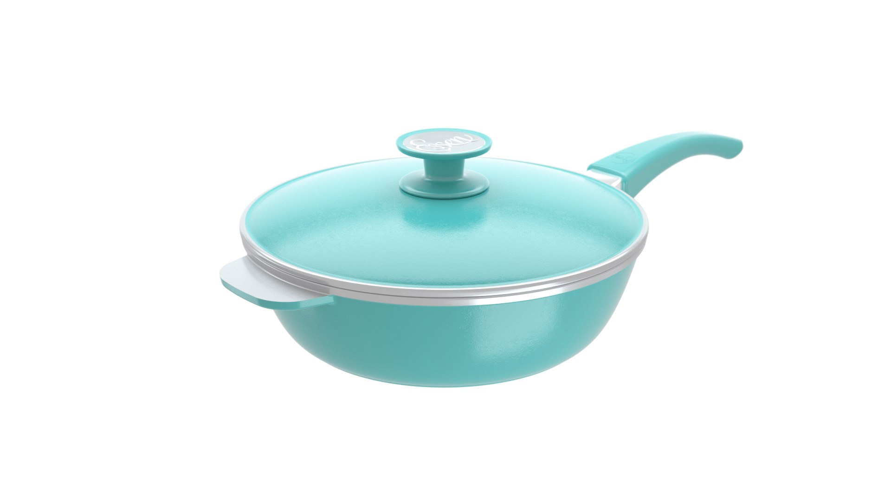
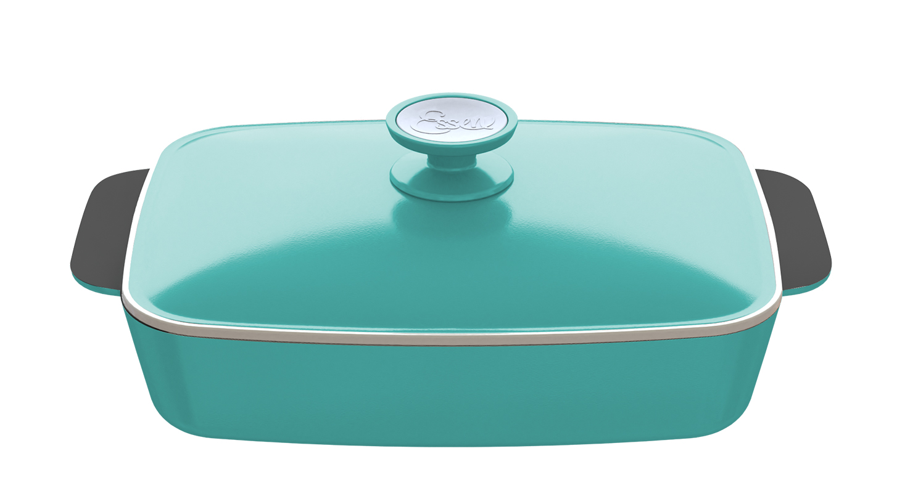
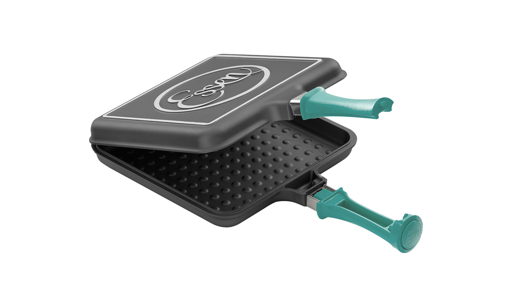

Sarten Aqua
En esta Sartén podrá realizar recetas para compartir con 4 o 5 comensales. En conjunto con la Cacerola con asas de 24 cm y la Bifera, son un equipo ideal para satisfacer las necesidades de la cocina de matrimonios jóvenes con hijos pequeños
Precio: $6000Cacerola 24cm

Son una excelente opción ya que se adaptan a una familia de entre 4 y 5 integrantes resolviendo absolutamente todas las posibilidades de preparaciones y cocciones tanto dulces como saladas: desde tortas a panes, carnes, cazuelas, guisados, sopas, etc.
Precio: $7500Rectangular Aqua
El diseño de la Fuente Rectangular permite distribuir uniformemente el calor por toda la superficie. Su forma hace que manipular los ingredientes durante la cocción sea mucho más fácil y seguro. La amplitud del producto es ideal para preparaciones de entre 4 y 6 comensales. Facilita la cocción de canelones, lasagnas, carnes y los más ricos postres.
Precio: $10000Aqua Flip
Este producto gracias a su multifuncionalidad permite preparar una gran cantidad de recetas como grillados de carnes blancas, rojas y verduras, tartas, tortas, masitas, panqueques, masas, tortillas, tostados y todas las recetas que te imagines exceptuando aquellas que son líquidas o poseen un alto porcentaje de líquido en la preparación. Se puede usar de ambos lados simplemente girándola con el mango sobre la cocina.
Precio: $5000